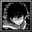

Player profile
rintak
Rank #56server.eurobattle.netSeason 2
Most played · 朱雀院 紅葉
Matches120 wins · 12 losses
Win rate0%
Avg K / D / A12.6 / 34.5 / 7.2
Avg APM150
Avg damage dealt167.0k
Avg damage taken116.9k
Heroes played
Explore heroes →| HERO | MATCHES | WIN RATE | AVG K / D / A | AVG DMG |
|---|---|---|---|---|
朱雀院 紅葉Most played | 2 | 0% | 16.5 / 34.0 / 7.0 | 156.3k |
『斬撃の花』 | 1 | 0% | 7.0 / 31.0 / 7.0 | 107.1k |
Keqing | 1 | 0% | 14.0 / 26.0 / 12.0 | 212.1k |
藤原 妹紅 | 1 | 0% | 15.0 / 29.0 / 3.0 | 145.6k |
Saber Alter | 1 | 0% | 19.0 / 38.0 / 9.0 | 208.2k |
黒崎 一護断界 | 1 | 0% | 12.0 / 30.0 / 5.0 | 171.3k |
Uchiha Itachi | 1 | 0% | 8.0 / 40.0 / 4.0 | 146.3k |
 上条当麻 | 1 | 0% | 11.0 / 39.0 / 6.0 | 129.7k |
Spirit of Destruction | 1 | 0% | 11.0 / 37.0 / 5.0 | 209.3k |
The One Who Stands Above All | 1 | 0% | 6.0 / 34.0 / 5.0 | 108.9k |
Hitsugaya Toshiro | 1 | 0% | 15.0 / 42.0 / 16.0 | 252.9k |
Averages use recorded statistics only; unavailable historical values are shown as —.
Recent matches
Open a match for its scoreboard and kill matchups.
LOSS54:31
MCB #2000257
22 Nov 2026 · 20:57 WIB
7.0 / 31.0 / 7.0View match →
LOSS59:29
MCB #2000251
21 Nov 2026 · 16:52 WIB
14.0 / 26.0 / 12.0View match →
LOSS52:15
MCB #2000242
19 Nov 2026 · 01:11 WIB
15.0 / 29.0 / 3.0View match →
LOSS66:02
MCB #2000238
16 Nov 2026 · 23:01 WIB
19.0 / 38.0 / 9.0View match →
LOSS58:52
MCB #1000075
16 Nov 2026 · 21:21 WIB
12.0 / 30.0 / 5.0View match →
LOSS59:14
MCB #1000074
16 Nov 2026 · 20:06 WIB
20.0 / 29.0 / 7.0View match →
LOSS57:12
MCB #2000212
07 Nov 2026 · 17:03 WIB
13.0 / 39.0 / 7.0View match →
LOSS61:41
MCB #1000066
30 Oct 2026 · 22:51 WIB
8.0 / 40.0 / 4.0View match →
LOSS59:16
MCB #2000175
24 Oct 2026 · 16:10 WIB
11.0 / 39.0 / 6.0View match →
LOSS66:09
MCB #2000172
23 Oct 2026 · 19:25 WIB
11.0 / 37.0 / 5.0View match →